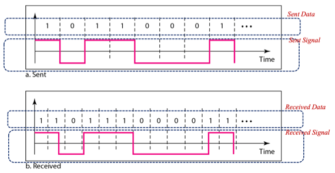
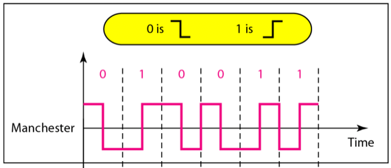
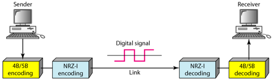
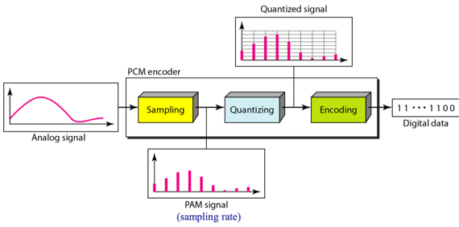
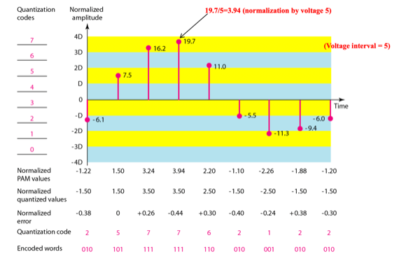

충남대학교 컴퓨터공학과 김상하 교수님의 "데이터 통신" 강의를 필기한 내용입니다.
다소 잘못된 내용과 구어적 표현 이 포함되어 있을 수 있습니다.
D2D, A2D
- 통신이 이루어지는 순서를 보면
- Analog Data → Digital Data → Analog Signal 혹은 Digital Signal → Digital Data → Analog Data
- 의 순서로 이루어진다
- Digital Data → Digital Signal의 변환을 Digital To Digital Conversion이라고 하고
- Analog Signal → Digital Signal로의 변환을 Analog To Digital Conversion이라고 한다
Digital To Digital Conversion
Synchronization의 중요성

- 신호는 bit들을 매우 빠른 속도로 송출하기 때문에 송신자와 수신자 간의 Synchronization이 맞지 않으면 신호가 정확하게 전달되지 않아 해석과정에서 다른 데이터를 얻게 된다
- 위의 예제를 보면 뭔소린지 알 수 있다 - 같은 신호를 수신했지만 baud rate를 다르게 나눠 다르게 신호가 해석된 것을 알 수 있다
- 따라서 이렇게 baud rate를 동일하게 가져가 signal element 한칸의 시간을 동일하게 만들어 의도한대로 해석되게끔 하는 것이 Synchronization이다
- Digital data를 그대로 보내지 않고 굳이 Digital signal로 변환하여 전송하는 이유가 Synchronization을 맞춰주기 위해서이다
Conversion Algorithm
- 딴건 다 몰라도 되고 Manchester Scheme이랑 Block Coding만 좀 알아두면 된다
Manchester scheme

- 이 알고리즘은 단순히 신호의 세기로 0과 1을 판단하는게 아닌 세기의 변화에 집중한다
- Manchester Scheme 알고리즘은 신호가 떨어지면 0으로, 신호가 강해지면 1로 판명하는 구조이다 - 첫번째 그림
- 얘가 Line Coding의 한 종류라는 것 정도는 알아두자
- 근데 저기 보면 00이 수신된 경우 한번 내려주고 또 내려야되는 상황이 되는데 이것을 위해 한번 내린 뒤 또 올렸다가 다시 내리는 것을 볼 수 있다
- 그리고 11인 경우에도 마찬가지의 일이 벌어진다 - 한번 올려주고 또 올려주기 위해 내렸다가 올리게 된다
- 근데 이것은 오해의 여지가 있다 - 00인 경우에는 다시 내리기 위해 올려주는 건데 이것을 1로 판단하는 경우가 있을 수도 있고 11인 경우에도 다시 올리기 위해 내려주는건데 이것을 0으로 판단할 여지가 있다
- 따라서 파형을 보고 대략적으로 시간을 나눠주긴 한다 - 위의 예제에서 처음에 0이어서 한번 떨어졌다가 1이어서 다시 올라가기까지의 중간지점이 하나의 bit가 끝나는 지점이라고 생각하고 그 시간간격으로 나눠서 신호가 떨어지는지 아닌지를 가지고 0과 1을 판단하는 것
- 하지만 비트 하나를 보내기 위해 두개의 signal element가 필요하므로 제일 bitrate가 느리다는 단점이 존재한다
- 15p의 biphase scheme에 바로 이 방식이 포함된다
- 보면 나머지는 다 n이 b의 배수인데 비해 biphase는 n=b로 매우 느리다
- 따라서 요즘에는 별로 쓰이지 않는 기법이란다
Block coding concept
- 비트를 m개로 묶은 데이터를 전송하려고 할 때 이것보다 비트를 n개로 묶어서 전송할때 더 동기화 등에서의 이점이 있다면 이것을 n개로 묶어서 전송한 후 수신 후에 다시 m개로 묶는 것이 더 효율적일 것이다 - 이런 기법이 Block coding 기법이다
- mB/nB encoding이 m비트 데이터를 n비트로 변환한다는 뜻이다

- 23p에서 NRZ-I line coding scheme으로 신호를 전송하기 위해서는 5B를 이용하는 것이 더 효율적이기 때문에 4B데이터를 5B데이터로 전환해 전송하고 수신하는 과정을 보여준 것이다 - 24p가 변환 테이블이며 이 4B/5B encoding은 자주 사용되는 특별한 알고리즘이다 - 이정도만 알아두면 될듯
Analog To Digital Conversion
- 아날로그 데이터를 디지털 데이터로 바꾸는 것
PCM encoder

- Sampling : 일정한 시간 간격으로 잘라 세기를 측정하는 것
- sampling rate - 초당 몇개의 시간 간격으로 자르는지
- 간격당 신호의 세기를 PAM이라고 하는듯
- Quantization & encoding : sampling 된 결과를 정수값으로 변환하는 과정

- Normalized PAM Values : 일정한 값(D)으로 나눠서 값들의 편차를 줄인다
- 일단 결과론적으로 값들을 5로 나누면 저 Normalized PAM Value가 나온다
- 이 5라는 도대체 어디서 나온 것이냐
- 일단 우리는 쟤네들을 3비트로 표현하고 싶기 때문에 8개의 등급으로 나눠야 되고
- 그리고 PAM최댓값이 약 20이므로 -20~20이면 모든 PAM값들이 포함되므로
- 40을 8로 나눈 5를 PAM들에다 나눠주면 -4~4의 범위 안에 값들이 다 들어오게 된다
- 이렇게 PAM / {(PAM 절대값의 최대값) * 2 / 2^비트수} 를 해줘 PAM값들의 분포 범위를 줄이는 작업을 뜻한다
- Normalized Quantized Values : normalize한 값을 일정한 기준으로 반올림하여 모든 값을 기준에 맞춘다
- 위 예제에서는 결과가 x.5가 되도록 반올림을 해준거다
- Normalized Error는 Normalized 값과 Quantized 값과의 차이를 의미함
- Quantization Code가 normalized quantized value에 3비트 숫자를 할당한 것이고 그것을 3비트로 변환한 것이 Encoded Words이다
- 더 많은 비트로 표현해 구간을 더 세밀하게 만들수록 데이터의 양은 커지지만 더 정확하게 값을 디지털로 표현할 수 있게 된다